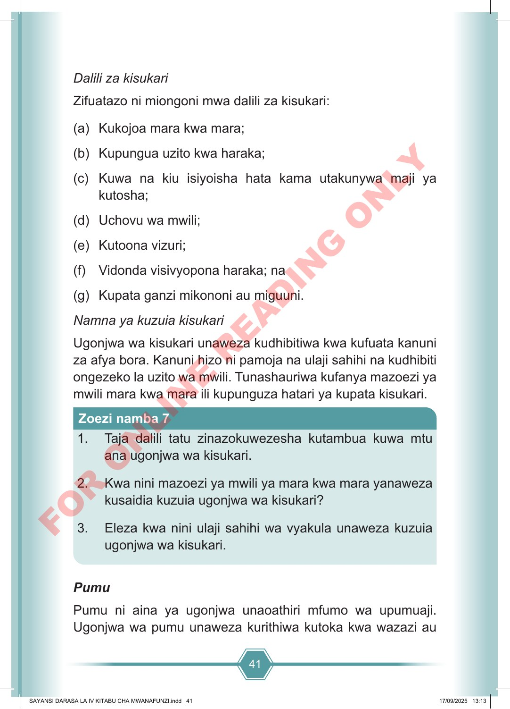

41 Dalili za kisukari Zifuatazo ni miongoni mwa dalili za kisukari: (a) Kukojoa mara kwa mara; (b) Kupungua uzito kwa haraka; (c) Kuwa na kiu isiyoisha hata kama utakunywa maji ya kutosha; (d) Uchovu wa mwili; (e) Kutoona vizuri; (f) Vidonda visivyopona haraka; na (g) Kupata ganzi mikononi au miguuni. Namna ya kuzuia kisukari Ugonjwa wa kisukari unaweza kudhibitiwa kwa kufuata kanuni za afya bora. Kanuni hizo ni pamoja na ulaji sahihi na kudhibiti ongezeko la uzito wa mwili. Tunashauriwa kufanya mazoezi ya mwili mara kwa mara ili kupunguza hatari ya kupata kisukari. 1. Taja dalili tatu zinazokuwezesha kutambua kuwa mtu ana ugonjwa wa kisukari. 2. Kwa nini mazoezi ya mwili ya mara kwa mara yanaweza kusaidia kuzuia ugonjwa wa kisukari? 3. Eleza kwa nini ulaji sahihi wa vyakula unaweza kuzuia ugonjwa wa kisukari. Zoezi namba 7 Pumu Pumu ni aina ya ugonjwa unaoathiri mfumo wa upumuaji. Ugonjwa wa pumu unaweza kurithiwa kutoka kwa wazazi au SAYANSI DARASA LA IV KITABU CHA MWANAFUNZI.indd 41 SAYANSI DARASA LA IV KITABU CHA MWANAFUNZI.indd 41 17/09/2025 13:13 17/09/2025 13:13 F O R O N L I N E R E A D I N G O N L Y